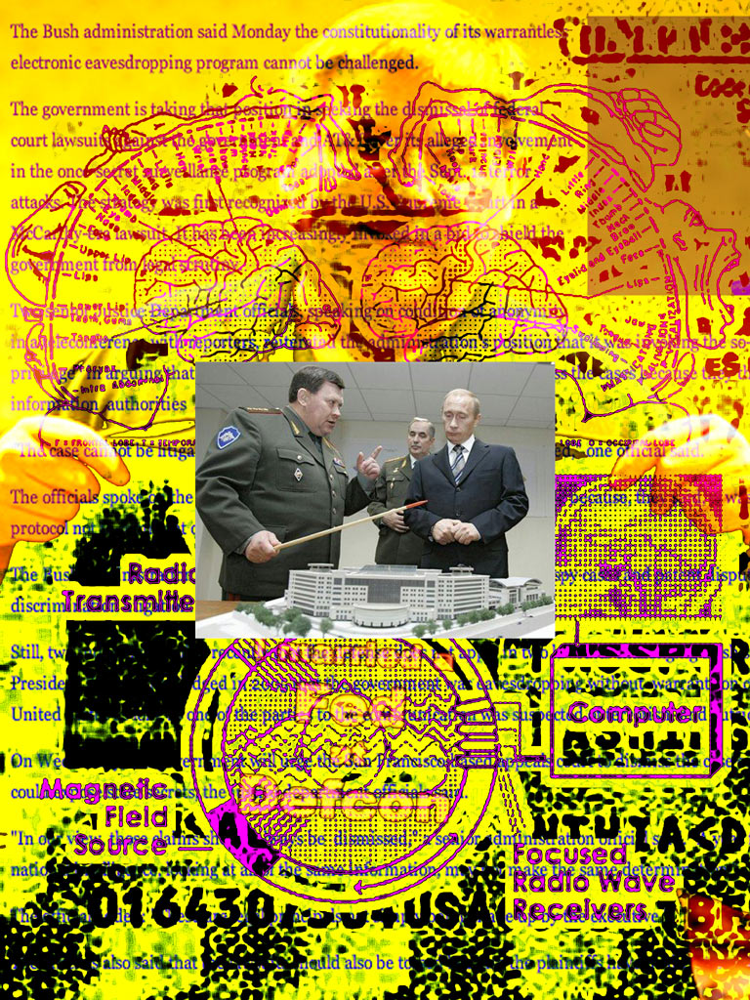

FEDERALISM, SOCIALISM, ANTI-THEOLOGISM
MICHAEL BAKOENIN
The state is in no wise an immediate product of nature. Unlike society, it does not precede the awakening of reason in men. The liberals say that the first state was created by the free and rational will of men; the men of the right consider it the work of God. In either case it dominates society and tends to absorb it completely.
...
But, one might say, could the State, the democratic State, based upon the free suffrage of all its citizens, be the negation of their liberty? And why not? That would depend entirely on the mission and the power that the citizens surrendered to the State. A republican State, based upon universal suffrage, could be very despotic, more despotic even than the monarchical State, if, under the pretext of representing everybody's will, it were to bring down the weight of its collective power upon the will and the free movement of each of its members.
...
Any logical and straightforward theory of the State is essentially founded upon the principle of authority, that is, the eminently theological, metaphysical, and political idea that the masses, always incapable of governing themselves, must at all times submit to the beneficent yoke of a wisdom and a justice imposed upon them, in some way or other, from above. Imposed in the name of what, and by whom? Authority which is recognized and respected as such by the masses can come from three sources only: force, religion, or the action of a superior intelligence. As we are discussing the theory of the State founded upon the free contract, we must postpone discussion of those states founded on the dual authority of religion and force and, for the moment, confine our attention to authority based upon a superior intelligence, which is, as we know, always represented by minorities.
...
Let no one think that in criticizing the democratic government we thereby show our preference for the monarchy. We are firmly convinced that the most imperfect republic is a thousand times better than the most enlightened monarchy. In a republic, there are at least brief periods when the people, while continually exploited, is not oppressed; in the monarchies, oppression is constant. The democratic regime also lifts the masses up gradually to participation in public life-something the monarchy never does. Nevertheless, while we prefer the republic, we must recognize and proclaim that whatever the form of government may be, so long as human society continues to be divided into different classes as a result of the hereditary inequality of occupations, of wealth, of education, and of rights, there will always be a class-restricted government and the inevitable exploitation of the majorities by the minorities.
The State is nothing but this domination and this exploitation, well regulated and systematized. We shall try to prove this by examining the consequences of the government of the masses by a minority, intelligent and dedicated as you please, in an ideal state founded upon the free contract.
...
Nothing is as dangerous for man's personal morality as the habit of commanding. The best of men, the most intelligent, unselfish, generous, and pure, will always and inevitably be corrupted in this pursuit. Two feelings inherent in the exercise of power never fail to produce this demoralization: contempt for the masses, and, for the man in power, an exaggerated sense of his own worth.
...
Take the most intelligent ape, with the finest disposition; though you place him in the best, most humane environment, you will never make a man of him. Take the most hardened criminal or the man with the poorest mind, provided that neither has any organic lesion causing idiocy or insanity; the criminality of the one, and the failure of the other to develop an awareness of his humanity and his human duties, is not their fault, nor is it due to their nature; it is solely the result of the social environment in which they were born and brought up.